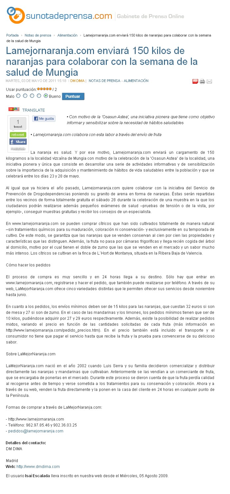
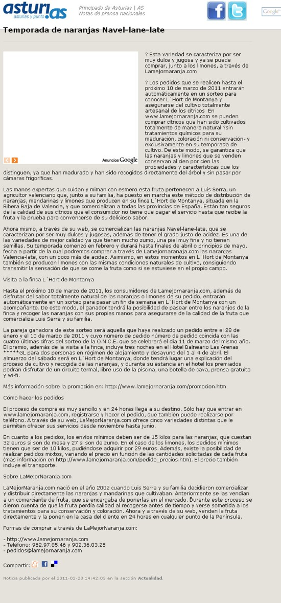
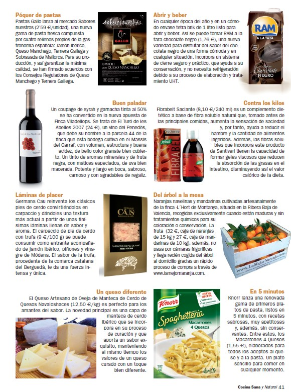
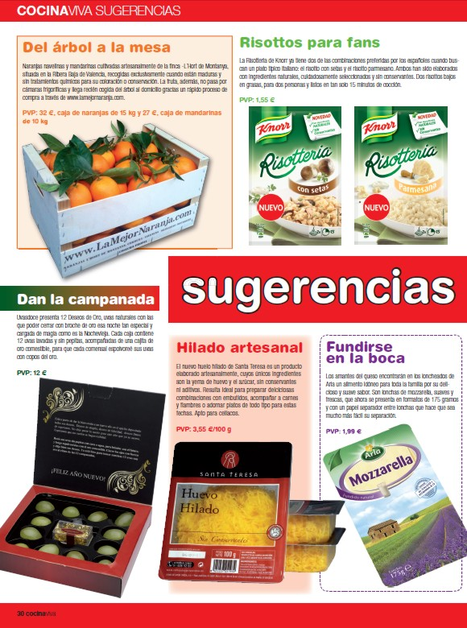
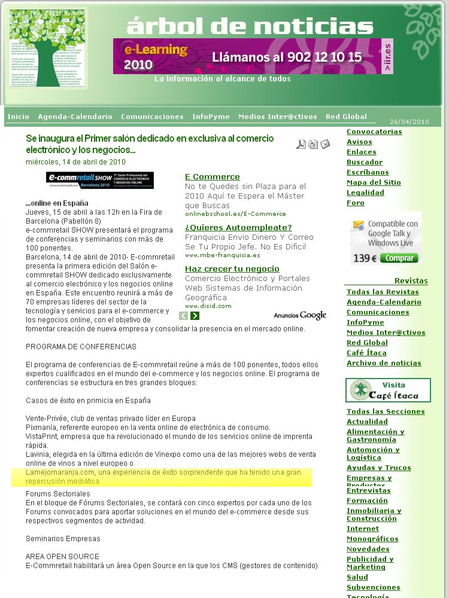
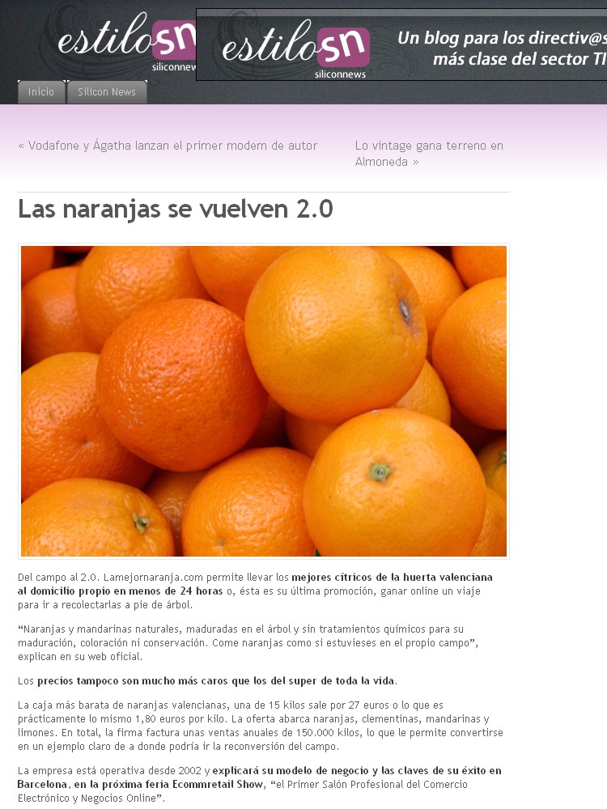

Noticias
Categoría
-
LaMejorNaranja.com enviará 150 kilos de naranjas para colaborar con la semana de la salud de Mungia
-
Temporada de naranjas Navel-lane-late en LaMejorNaranja.com

-
LaMejorNaranja.com en Cocina Sana

-
LaMejorNaranja.com en Cocina Viva

-
LaMejorNaranjas.com en Árbol de Noticias

-
La Mejor Naranja, caso de éxito en el primer salón profesional de comercio electrónico

-
Los mejores cítricos de la huerta valenciana

Fuente: http://estilosn.siliconnews.es/2010/04/13/las-naranjas-se-vuelven-2-0/
-
LaMejorNaranja participará en el primer salón profesional del ecommerce y negocio online

Fuente: http://www.espana-liberal.com
-
Temporada de naranjas dulces y jugosas

Fuente: http://www.noticiasjovenes.com
-
El mejor aliado contra los resfriados
Fuente: Acceso